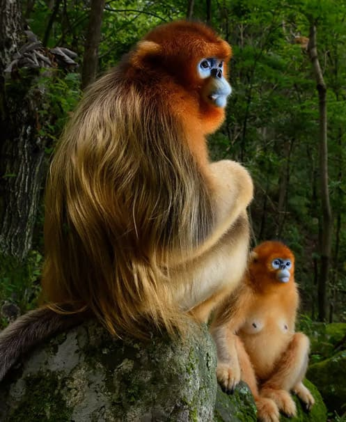

Title: Two golden snub-nosed monkeys
Created by an author: Alex Petkov
Keyword: Animal
Location: North America
Date: 18.02.2021
Description: Monkey, in general, any of nearly 200 species of tailed primate, with the exception of lemurs, tarsiers, and lorises.All but the durukuli of tropical Central and South America are active during the day, moving frequently in bands as they search for vegetation.

Votes
Total rating of votes: 0
People who voted for the post - No one has voted yet.